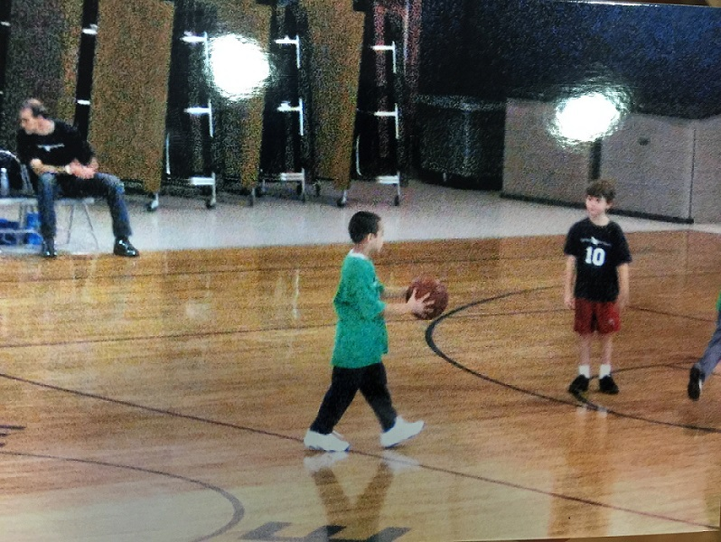
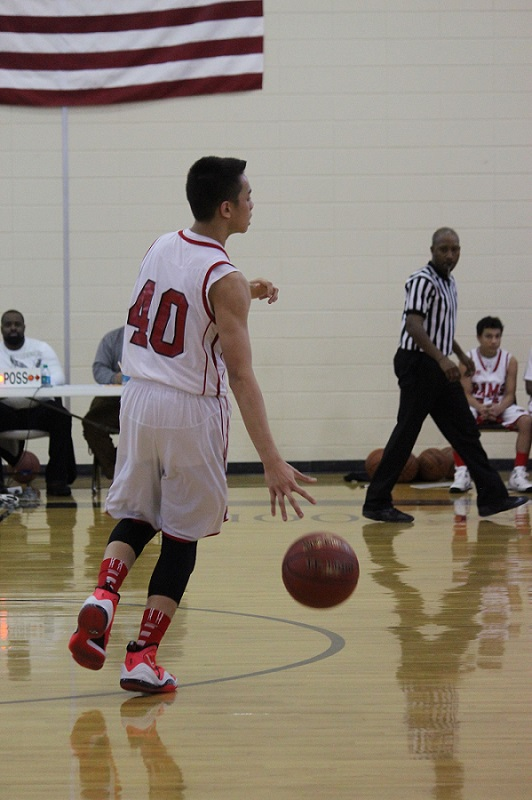
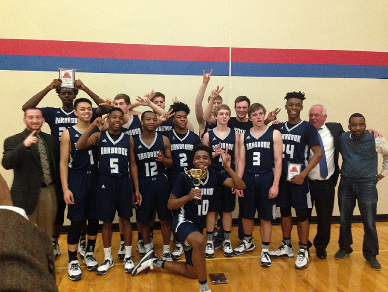

My Hobby Basketball
My basketball career started when I was four years old. Growing up, I'd love basketball so much that I carried my own little toy basketball everywhere I go. It didn't matter where I went, to the store, eating at a restaurant, and even in my sleep. Heading over to when I was four years old, my dad got me on a church team (Price of Peace) to start with. I was very nervous on my first day trying out for my team. Weeks later, my dad got the announcement for that made the team. My dad showed me the list and gratefully, I was on the list. I was so excited for what I can do for the team. We won in our division the first year. Fast forwarding to me being a fifth grader, I played for the same team but on a higher level. I played with seventh and eighth at this time. The coach that taught me and being the basketball player I am now is Paul Hovey. He was the best coach you could ever imagine. It was me and my older brother, Savyon, on the same team for the first time. I always loved playing with him because we had a brother bond that we could read each other mind. Savyon would always know when to pass to me and I will know his hot spots. On that same year, we won the championship for our division.
My year as a middle schooler was an up and down experience. In the Greenville County District, you couldn’t try out until you were a seventh grader and around that time I was a sixth grader. The school I went to was Greenville Middle Academy. Moving on to my second year, I tried out for my school team. Of course, I made it on the team with confidence. I played for my social studies teacher, Mr. Hall, and my older brothers past social teacher, Mr. Roach. It was kind of funny for my own social studies to be my coach. That summer of my sixth grade year, I played for a AAU team called the Jamma Jaguars. My coaches were Mr. & Mrs. Jenkins. I met them a while back when I was in elementary school. The team was like a building process to where we had to get people to our team to build our organization. Our team played travel ball to most places like Atlanta, Georgia, and Suwanee. These tournaments we so big that they had college coaches and even NBA coaches come out to see what were the team and players were like. Moving on to my seventh grade, it was kind of a blur and bummy. I was in the starting lineup and I was playing the small forward and power forward position. I did get to play the minutes that I expected but the problem was I wasn't preforming the way I do. The anxiety I had in my body was always there whenever I play a game. Our team made it to the playoffs but we couldn't seal the deal off with Bryson Middle. We lost in defeat with the score 52-46. That basketball year was not my favorite year. Next year, I was totally ready for the comeback this year. Into the season, Coach Hall picked me to become the captain for this year’s team and along with me was my basketball teammate, best friend, CJ Jamison. We won most of our games in our season and when the playoffs came, we were #4 in our conference. Moving into our first playoff game of the year was a winning title against Ralph Chandler. Round 2 of the playoffs, we played Hughes Middle. It was a neck-to-neck game all four quarters. But sadly, we lost to a close defeat; the score was 53-49. The summer of eighth grade year, my older brother went to Eastside High School. He was on the varsity basketball team and the varsity coach invited me to work out and train with them. So from there I trained and worked out and we eventually to Presbyterian College. I played with Savyon's team during the camp.
Two months passed and it was nearly the school year to begin. Before school happened I played for another team which was Oakbrook Preparatory School. It was a private school in Spartanburg that I never heard about before or anything at all. The coach was Coach K and he invited me to play over there and see if I would like it. We played the tournament at Spartanburg Christian School. Coach K liked the way I played and he insisted that I should go there for my school year. As the school year started, I was a freshman at this time. Before the basketball season came around, we played in the tournament of Upward. I played with both JV and Varsity teams. Both teams did well for the tournament and soon enough, the basketball season was ready to begin. This basketball year was better than I expected it to be. We were #2 in the conference with our school rivalry which was Spartanburg Day School at #1. The playoffs came and we played against our rivalry and with greatness achieving, we won against them twice in the Regional Tournament. We semifinals came and we played against a team that we never heard of but we lost in defeat with the of score 60-52. That's when the season came to an end. When my freshman year ended, that summer was going to be a fresh new start. I didn't have to worry about my season at Oakbrook at all and I had to focus on my next step. My parents and I had to transfer schools and the school was going to be Riverside High School. I played with all of my teammates (Landon Shaw, Braxton Ricker, Hayes Brush, and etc.) that I knew since I was a little kid. The coach for us was Mr. Monty and Q. We played in a live tournament and the place was Suwannee Sports Academy. The whole building was filled up with basketball games going on everywhere. Any high and professional coach was in the building was watching players and even the News came in. In the beginning of August, I was training and working out with my trainer Jacob. All of my brothers trained with him and it was only for 6 weeks before school.
Now in my life, I'm a sophomore at J.L. Mann High School. Of course, I'm new to this whole school. To be honest with myself and you, it was a great experience and ride for what I went through. To me playing for Prince of Peace to Greenville Middle and Oakbrook was worth it. I wouldn't be the person I am today or the skills I have for basketball. I would've not done it with the support from the one and only, my family. I give thanks to all the trainers and teammates and workouts for helping me out.